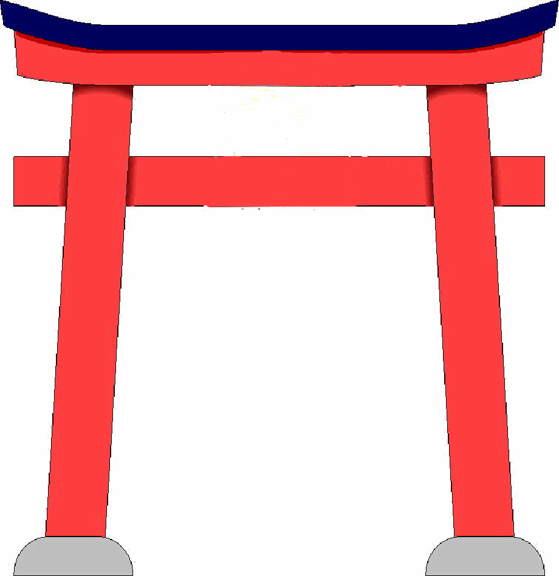
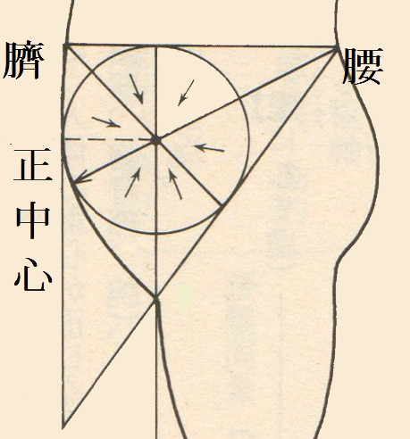
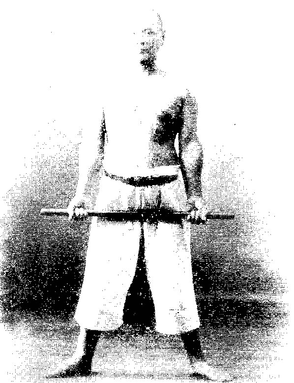
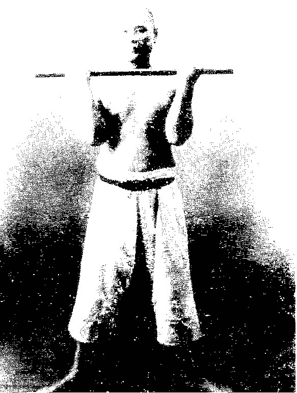
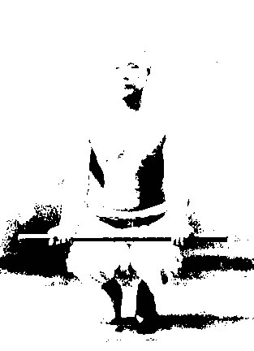
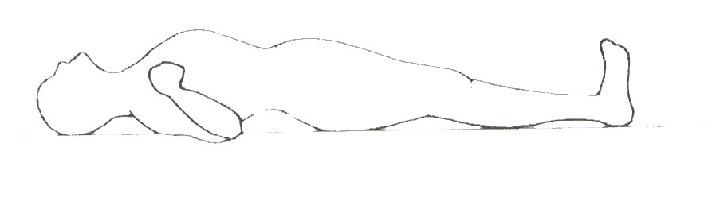
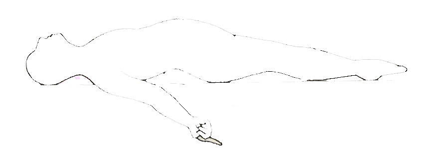

日本の秘教
日本の秘教の歴史 親鸞聖人 宮本武蔵「五輪書」 白隠禅師 本田親徳 宮地水位 川面凡児 三田光一 肥田 春充 出口王仁三郎 植芝盛平「合気神髄」抜粋| 日本の秘教の歴史 | ||
| 旧石器時代（約4万年前） | ||
| 縄文時代（約１万6000年前～） | 縄文人（出雲族・山窩の始祖）縄文土器（蛇・女神崇拝）ヒスイの勾玉 YAP遺伝子 | |
| 弥生時代（B.C1000～） | 渡来人(大和族）による稲作の伝来 | |
| ヤマト政権（4世紀～） | 古墳・鉄剣 | |
| 飛鳥（593～） | ||
| 聖徳太子 | 十七条の憲法の第２条に、「篤く三宝を敬え。三宝とは仏法僧なり」と日本の仏教興隆に尽力する。三経(勝鬘経・結摩経・法華経)の注釈もする。中世・近世には聖徳太子を聖者と仰ぐ太子信仰が盛んとなる。 | |
| 役小角（えんのおづぬ） | 修験道の開祖とされる伝説上の人物 | |
| 修験道 | 日本では古代から山岳信仰があり、修行者たちは山に入り、そこで修行した。そして道教や仏教や神道が融合した修験道という独自の信仰が成立していった。鎌倉時代に入ってからは、さらに高野聖、善行寺聖などの修験者が各地を廻って山岳修行するようになった。また次第に修験者は真言宗系の当山派と天台宗系の本山派のどちらかに組織化されるようになっていった。江戸時代になると幕府が寺請制度や寺院法度を出した為、修験者（山伏）は農村に定住するようになり、占い、祈祷や治療、仏事法要などを行って庶民の精神生活と密着するようになった。しかし明治維新の神仏分離令により、修験道は禁止され、山伏は還俗させられた。 | |
| 奈良（710～） | 古事記編纂 | |
| 陰陽道 | 古代中国の陰陽五行説や道教をルーツにする。奈良時代から明治時代になるまで、天文や暦、陰陽五行を用いて吉凶を占う陰陽寮が朝廷の官僚機構に組み込まれる。 | |
| 平安（794～） | ||
| 空海（真言密教） | 若い時、虚空蔵求聞持法(こくうぞうぐもんじのほう)を修業し、大いなる光が身体を包み込む体験をする。遣唐使になり、唐の恵果和尚に師事して灌頂を受ける。密教を日本に持ち帰り真言密教の創始者となる。 | |
|
即身成仏 |
生まれた身そのままで大日如来と一体となること。 | |
三密加持 |
人間の日常活動の基本は「身体活動」「言語活動」「精神活動」の三つである。この三つの活動を仏に近づけることにより即身成仏を目指す修行法。具体的には行者は身密（印）、口密（真言）、意密（心を仏の境地におく）で瞑想して大日如来と一体化しようと修行する。 | |
虚空蔵求聞持法 |
山にこもり、１日１００万回真言を唱え続ける。それにより天才的な記憶力がつくと言われる。 | |
| 阿字観 | 「阿」字（大日如来を表す梵字）を観ずる瞑想法 | |
| 天台密教 | ||
止観 |
行者の修行法(止観を重ね、持続して、日常生活にも保つことによって、即身成仏を目指す。） |
|
| 安倍晴明 | 平安時代の陰陽師として一条天皇や藤原道長の信頼を集める。厄祓い、式神を使用など多くの不思議な逸話を残している。 | |
| 鎌倉・南北朝・室町・戦国（1192～） | ||
| 親鸞聖人 | 自力ではなく、阿弥陀仏の本願による他力念仏による解脱を説く。『教行信証』が主著。 | |
| 江戸（1603～） | ||
| 宮本武蔵 | 武芸者で29歳まで60回以上果し合いをして1度も、負けなかった。晩年は洞窟にこもり、「五輪書」を著した。 | |
| 白隠 | 江戸中期の臨済宗中興の祖と称される禅僧。 | |
| 明治・大正・昭和（1868～） | ||
| 宮地水位（みやじすいい） | 日常的に幽界を往復し、「異境備忘録」に幽界の有様を記述する。道教と古神道を融合させた宮地神仙道を確立する。 | |
| 川面凡児(かわつらぼんじ) | 十五歳の時から三年間、馬城峰にこもり仙人に行法を指導されたといわれる。幽体を飛ばし人の眼前に現われたといわれる。禊（みそぎ）行を確立し、鎮魂鳥居の伝という瞑想法を生み出した。 | |
| 出口王仁三郎 | 若い頃、高熊山の洞窟に一週間の修行をして、霊界に行き修行をする。その後、大本教を開教して出口なおと合流する。植芝盛平に影響を与える。霊界物語を口述したり、数々の予言を的中させたりする。 | |
| 三田光一 | 福来友吉によって発掘された「超能力者」の一人。月の裏側や空海の念写で知られる。 | |
| 肥田 春充（ひだ はるみち） | 肥田式強健術の創始者。晩年には透視能力も開発された。 | |
| 植芝盛平 | 合気道の創始者。黄金の光に全身が包まれ宇宙と一体化したり、幽体と２週間稽古するなどの神秘体験も体験する。 | |
|
|
| 親鸞聖人 | ||
| 『教行信証』 | ||
| 教 巻 | 真実の経は大無量寿経であり、観無量寿経と阿弥陀経はそのための方便の経である。 | |
| 行 巻（第十七願） | 【他力念仏】南無阿弥陀仏は衆生が唱えるのではなく、如来から衆生への呼びかけ（本眼力）である。だから念仏は唱えるのではなく、念仏の大合唱に自分も参加して、その念仏を受け止めるということである。
【五念門】 浄土への５つの門。礼拝（念仏）・讃嘆（歓喜）・作動（本願 働きかけ）・観察（智慧）・廻向（往生） 【往相廻向】 衆生を安楽浄土に往生させるという阿弥陀如来の本願力。 【名号】 阿弥陀の名を念ずる者を救おうとされる第十八願の事。その名号の本質は光明である。 |
|
| 信 巻（第十八願） | 【一念】浄土に生まれる原因が定まるのは他力本願によるものなので、時間にするとほんの短い間である。それを一念という。
【行信一念】念仏は如来から衆生への呼びかけ（本眼力）で るから、それを私たちが受け止めることによって浄土に生まれる本当の原因が生まれる。その名号のはたらきを信ずる信心が往生の因である。それゆえに信をはなれたる行もなく、行の一念をはなれたる信の一念もない。 名号と信心とがはなれずにあって、 それ が浄土に生まれる業因となる。
【信心】信心というのは私たちが自分でその心をおこすのでなく、 信心がひらかれるのは釈迦・弥陀のたくみな方便によってひらかれるのである。要するに、信心ということが私たちのおこす信仰心ではなく、 如来より与えられた大信心である。光明と名号が信心をひらく因縁である。 【三心】第十八願には、至心（仏性に、この上なく誠実な心のこと）、信楽（金剛心：ダイヤモンドのように硬い信心）、欲生（阿弥陀仏の浄土に生まれたいと真剣に願うこと）の三心をおこすようにと書かれている。 |
|
| 証 巻（第十一願） | 【正定聚】 阿弥陀仏の信心を受容することで、現世において、命終わった後に必ず浄土に往生することが約束された身となること。
【歓喜と慚愧】 正定聚となっても、生きている間は煩悩具足のままであり、 歓喜と慚愧が交差するということ。 【摂取不捨の利益】 仏が背を向けて逃げる者でもガチッと摂め取って見捨てない幸福。 【無碍の一道】 さまたげ（碍）が多い人生にありながら、さまたげをこえて歩む道があたえられること。 | |
| 真仏土巻（第十ニ願、第十三願） | 真の仏土とは、虚空のごとく限りのない光明である。 | |
| 方便化身土巻（第十九願、第ニ十願） | 【三願転入】 第十九願（定善・散善）、第ニ十願（自力念仏）は第 十八願に至るための方便の教えである。 | |
| 『大無量寿経』 | ||
| 〔第 十一願〕 住正定聚願・必至滅度の願
たとえ、 わたくしが仏になる時が来ても、 我が国土の人びとや神霊たちが正定聚（さとりが決定した人びと）となって必ず滅度(解脱）に至らないならば、わたくしは仏になりません。 | ||
| 〔第 十二願〕 光明無量願
たとえ、わたくしが仏になる時が来ても光明に限りがあって、 もし百千億那由他の諸仏の国々を照らすことができないのなら、わたくしは仏になりません。 | ||
| 〔第 十三願〕 寿命無量願
たとえ、わたくしが仏になる時が来ても寿命に限りがあって、 もし百千億那由他の劫に及ばないなら、 わたくしは仏になりません。 | ||
| 〔第 十 七願〕 諸仏称揚 願・諸仏称名の願
たとえ、 わたくしが仏になる時が来ても、 もし十方世界の無量の諸仏がことごとく我が仏名を讃え、我が仏名を称えないなら、 わたくしは仏になりません。 | ||
| 〔第十八願〕 念仏往生願・至心信楽の願
たとえ、 わたくしが仏になる時が来ても、十方の衆生が至心信楽、すなわち、心から我が本願を信じ、わが国土に往生したいと願って乃至十念、十回だけでも我が仏名を称え、もし往生することができないようであれば、わたくしは仏になりません。 ただ、母殺し・父殺しなどの五逆の重い罪と、正しく示された法を誹謗する深い背徳の人は、除かねばなりなりません。 | ||
| 〔第 十九願〕 来迎引接願・至心発願の願
たとえ、わたくしが仏になる時が来ても、十方の衆生が菩提心（ 悟りを求める心）を発して功徳を積み、至心発願して我が国土に往生したいと願ったのに、その人の臨終に、わたくしが聖衆に囲まれてその人の前に立ち、 臨終の人の心が乱れることがないようにできないないなら、 わたくしは仏になりません。 | ||
| 〔第二 十 願〕 係念定生願・植諸徳本の願・至心回向の願
たとえ、わたくしが仏になる時が来ても、十方の衆生が我が仏名を聞いて心に我が国土を念じ、よく善を修して功徳の本を育て、至心に回向する功徳の働きをもって我が国土に往生したいと願ったのに、それを遂げることができないなら、わたくしは仏になりません。 | ||
| 『観無量寿経』 | ||
| 【定 善 】 外界の刺激からはなれて心を集中して清浄世界を観ずる行法。日想観・水想観といった十六の観法。
【散 善】 自らの行業を正しくして浄土に生まれようとする行法。 | ||
| 『阿弥陀経』 | ||
| 往生を願い、「南無阿弥陀仏」の名号を唱えることを説いている。 | ||
|
|
| 宮本武蔵「五輪書」 | ||
| 「五輪書」抜粋 | ||
| 物事に付け、拍子は有る物なれども、とりわき兵法の拍子、鍛錬なくては及びがたき所なり。
第一に、よこしまになき事をおもふ所(正しい道を思う事）。 第二に、道の鍛錬する所。 第三に、諸芸にさはる所。 第四に、諸職の道を知る事。 第五に、ものごとの損徳をわきまゆる事。 第六に、諸事目先を仕覚ゆる事（真実を見分ける力を養うこと）。 第七に、目に見えぬ所をさとってしる事。 第八に、わずかなる事にも気を付くる事。 第九に、役にたたぬ事をせざる事。 兵法の道において、心の持ちようは、常の心にかわる事なかれ。常にも、兵法の時にも、少しもかはらずして、心を広く直にして、きつくひっぱらず、少しもたるまず、心のかたよらぬように、心をまん中におきて、心を静かにゆるがせて（流動自在な状態に保ち）、そのゆるぎのせつなも、ゆるぎやまぬように、よくよく吟味すべし。 目の付けようは、大きに広くつくる目なり。観見二つの事、観の目（丹田に集まった心で相手の気の動きを見ること）つよく、見の目よわく、遠き所を近く見、ちかき所を遠く見る事、兵法の専なり。 まず太刀をとっては、いづれにしてなりとも、敵をきるといふ心なり。もし敵のきる太刀を受くる、はる、あたる、ねばる、さはるなどいふ事あれども、みな敵をきる縁なりと心得べし。 千里の道もひと足ずつはこぶなり。千日の稽古を鍛とし、万日の稽古を錬とす。 岩尾の身といふ事、兵法を得道して、たちまちにして岩尾のごとくに成りて、万事あたらざる所（斬られることなく）、うごかざる所、口伝（である）。 武士は兵法の道をたしかに覚え、そのほか武芸をよくつとめ、武士のおこなふ事、少しもくらからず、心のまよふ所なく、朝々時事におこたらず、心意二つの心をみがき、観見二つの眼をとぎ、少しもくもりなく、まよひの雲の晴れたる所こそ、実の空と知るべきなり。 |
||
| 「独行道」抜粋 | ||
| 一、我事において後悔をせず。
一、道においては、死をいとはず思う。 一、仏神は貴し、仏神をたのまず。 一、常に兵法の道をはなれず。 |
||
|
|
| 白隠禅師 | ||
江戸時代の臨済宗の中興の祖。若い頃に、禅病にかかったが、 |
||
仙人のような白幽老人に「
内観の秘法」 「軟酥(なんそ)の法」 |
||
を教示され、それを実践した事により、難病を克服した。 |
||
著書「夜舟閑話」にその体験が綴られている。 |
||
| 内観の秘法 | 丹田に意識を置き、 「我が此の気海丹田・腰腹足心、本来の面目（本来の自己）」 「我が此の気海丹田・腰腹足心、本文の家郷（自分の故郷）」 「我が此の気海丹田・腰腹足心、唯心の浄土（極楽浄土）」 「我が此の気海丹田・腰腹足心、己身の弥陀（阿弥陀仏）」 と唱える。 吐く時に腹をへこませる丹田呼吸法を行い、心気の「火」を丹田に下げて、腎の「水」を上げて丹田で交わらせる。これを名づけて「交」という。
|
| 軟酥(なんそ)の法 | 息を吸うごとに、頭上に溶けた軟酥をイメージして、息を長めに吐くごとに、その溶けた軟酥が足心に到るまで、体中を潤しながら流れ落ち、その際病気の箇所があれば、溶けた軟酥によって修復されるのをイメージする。 |
|
|
| 本田親徳 | ||
| 一霊四魂三元八力 | 万物の生成は「霊（一霊四魂）」、「力（八力）」、「体（三元）」の三大要素によって起こるとしている。 | |
| 一霊四魂 | 霊魂は一霊（直霊）と四魂（荒魂＜勇＞・和魂＜親＞・奇魂＜知＞・幸魂＜愛＞）から構成されている。直霊は宇宙主催の神の直霊魂であり、四魂を統一し、その中にある。人は成長するに従って、直霊も入り来たり増大したり、体外に放出したりするとしている。 | |
| 三元 | 三元とは流（りゅう）、柔（じゅう）、剛（ごう）のことであるという。流体、柔体、固体である。 | |
| 八力 | 八力とは、動、静、引、弛、凝、解、分、合の八つの力である。これらの力は動と静、引と弛、凝と解、分と合と対照的である。つまり八力とは対照力の総称ということができるだろう。 | |
| 鎮魂法 | 【みたましずめ】 自分の魂が離れ散るのを招き返し、結び止めること 【おおみたまふり】神の御魂（直霊）を招いて自らの魂を広大ならしめること。 「みたましづめ」や「おおたまふり」により魂や直霊を三丹田（上丹田・中丹田・下丹田）に集める行法。 【本田親徳の鎮魂法】 鎮魂石に自分の霊魂が集中するのを凝念する。それから無念無想になるが霊魂だけは鎮魂石にとどまっていることが自覚される。 | |
|
|
| 宮地水位 | ||
| 霊胎凝結法 | ||
| 真一（天識・本魂） | 天地に先立って存在した精妙な至霊元気の根元。二気を含み、胎児の出生とともに入りきたる。 | |
| 陰陽の二気 | 【火（魂・陽）と水（魄・陰）】 男は陽でありながら陰物の精液を出し、女は陰でありながら陽物の血を出す男の陰物と女の陽物が交わって胎を結ぶ。そして天から本魂が宿る。嬰児が成長するにつれて魂魄（三魂と七魄）が宿る。 | |
| 三魂と七魄 | 【三魂】 荒魂・和魂・奇魂 【七魄】 尸狗（貪），伏矢（食），雀陰（婬），呑賊（偸），非毒（妄想），除穢（善を敗る），臭肺（煩悩）。こうした七魄を除去しなければ、真一と合一するのは難しいとしている。 魂魄は人が死ねば本魂とともに幽界に帰る。本魂（真一）と霊魂の結びつき度合いによって、幽界での霊魂の格が決まり、自由度、行ける範囲が違ってくる。死後、自由自在な神仙の境地に入らんとする者は、化生の身体（霊胎）を得なければならない。 | |
| 神気を養う | 堅く虚無（無心）を守り、霊魂（奇魂・幸魂・荒魂）を身体の中府に安養して、遊離させないことにより、真一を養う。真一をつねに養わなければ、感念をもって霊胎を化作することはできない。 | |
| 感念（霊物） | 【感】 幽中を貫き神霊に働きかける働き。外物（神）に触れ、神を感じ、神と合一する働き。 【念】 思いが積もって凝り結ぶ処のものであり、自己の霊魂を散らさず結び止める働き。念を凝らす時、奇霊な産霊の力が発現し、あらゆるものが化生する。ある一事を思い詰めるならば、その思いは凝結して一つの力を生じる。これを念力という。 感念の力により、霊物（感念）と玄素（空中に散満する５元の気）と真一（空より来る奇妙の生物）を身の外に結合させて、霊妙神化の身体を作る。霊胎を得れば、肉体が滅してもみずからの魂はこの不滅の身体に移り、永遠の生命を保持することができる。 | |
| 霊感使魂法 | ||
| 凝念することにより、身体の内外に自在に出入りし、幽中を貫いて万霊万物に感応する霊物である感神というものが、想念相応の作用を起こす。普通の人も、その想念にしたがって、この感神を放出しているが、その感神が微弱であり、七魄に汚されているため、ほとんど認識することができないでいる。 | ||
| 長全感一法 | 空中に向かい意識を集中し、霊物が出現することを感想する。 左目から、身長約９cmの美男、右目から、身長約９cmの美女が出現し、この男女一対の霊物は、修行者の額の上で遊ぶ。 この法を１年間たゆまず実行すれば、男女の霊物は徐々に長大となり、遂には合して一と成る。修行者が男の場合は男と成り、女の場合は女と成る。この霊物は自己の霊魂の分化したものであり、終には修行者自身の霊胎となる。 | |
| 使歩法 | 目を閉じ、自分の目的の場所まで歩いていくことを感想する。 その場合自分の身体が数百丈になったと想像し百里の先の目的地を、十里位を一歩で歩き、十歩程で百里先の目的地に到着するよう感想する。 その場所に至ったなら、身体を通常の大きさに想像で戻す。 | |
| 神仙導引気訣 | ||
| 仙道における内丹術（交媾龍虎、肘後飛金晶、玉液還丹）は最も基本的な修行方法であり、観念力を養う要法となるものである。またそれだけではなく、寿命長久、無病息災にも著しい効験がある。 | ||
|
|
| 川面凡児 | ||
| 川面凡児によると、人間には肉体の全細胞に宿る無数に近い魂である八十万魂（やそよろずたま）と、それらを司る直霊があり、八十万魂が準自立性を持っているため、それが一人歩きをしてしまいそのため精神と肉体のバランスが崩れ病気や犯罪になる。人間はじめ、この宇宙空間のあらゆるものは皆体内に宝珠を持っている。これは根本魂たる直霊であって神と同質のものである。第一に活動停止を余儀なくされている直霊を覚醒させて、第２に八十万魂といわれる身体全ての細胞を直霊の下に制御する。これを全身統一の大神事としている。 | ||
| 直霊（なおひ） | 人間の全細胞に直霊があり、それを統一する直霊がある。統一する究極の究極の直霊をたぐりよせていくと、宇宙の根本中心である神に到達する。 | |
| 和魂（にぎみたま） | 和魂は意識の霊魂。肉眼では見えないが微細な質量を持っている。奇魂（知性）と幸魂（感情）と真身魂（意志）の三つに分けられる。 | |
| 八十万魂（やそよろずのみたま） | 和魂はさらに感覚の発生単位としての八十万魂と呼ばれる、無数の魂の集合体から成る。 | |
| 直霊開発法 | ||
| 鳥 船 | 片足を斜め前に出して船の櫓をこぐように上半身を揺り動かす 反復動作 。しっかり し た脊椎 としなやか な 身体を整えるための準備運動。 | |
| 息吹 | 鼻より息（直霊）を吸いつつ、全身の毛穴からも息（直霊）を吸う心持ちで、腹部を膨張させる。
息をできる限り永く止めて、その気が全身の八十万魂へと広がることを観想する。 全身の毛穴から息を吹き出す心積もりで、息をゆっくりと口から吹き出す。 これを繰り返すうちに、八十万魂の隅々にまで気が行き渡り、毛穴のひとつひとつが呼吸していることが自覚できるようになる。 |
|
| 振魂 | 息吹をしながら、右掌を上に して十字に組み合わせた両の掌を、丹田の前方で上下に振り動かす。 根本の直霊を中核として、全身の八十万魂を振るい動かし、全霊を統一同化合体融合させるのを目的としている。 | |
| 鎮魂鳥居の伝 | ||
| 正座をして目蓋を半分閉じて、振魂を数十分の間続ける。初めは自分の意志で振り動かすものであるが、慣れてくると、内的な力の発動として振るい動くようになる。 直霊が開発され、霊眼が開けると、八段階で神秘体験が深まるとしている。 | ||
|  | ||
| 第１の鳥居 | 閉じた目の中に、光が現れる。八十万魂が統一鎮定された状態である。 | |
| 第２の鳥居 | 緑色の光の中に自分の顔（奇魂）が朦朧と見えるようになる。奇魂と幸魂が統一鎮定された状態である。 | |
| 第３の鳥居 | 明るいところで鏡に写した自分の顔を見るように、明瞭に見ることができる。和魂が統一鎮定された状態で、現実界と幽界の境界である。 | |
| 第４の鳥居 | 緑色の光が大きくなり手まりほどの大きさになる。その中にさまざまの風景や現象が現れては消滅する。幽界の門をくぐった段階である。 | |
| 第５の鳥居 | 最初は常日頃、強く思ったことがいろいろな形で現れる。しだいに自分が要求する過去や未来の出来事も現れるようになる。 | |
| 第６の鳥居 | 緑の光は次第に輪郭が失せて薄くなり拡散し、一面に広がり平等一体となる。奇身魂を目的地や目的物に走らせ、目的物を認識することができる。奇身魂が光となって飛び行くのを明らかに認めることができる。 | |
| 第７の鳥居 | 神（直霊）の声を聞き、姿を見ることができる。 | |
| 本殿 | 直霊が覚醒し、一体となる。 | |
| 三田光一 | ||
| 調息法 | ||
| 吸気 | 肺に空気を吸い入れる。胸部は膨張して、腹部は少し収縮する。 | |
| 定気（じょうき） | 下腹に気力を充実させる。胸はへこみ、腹部を膨張させる。 | |
| 押気（おうき） | 定気の状態で、さらにみぞおちの部分をへこます。そうすると下腹部はさらに膨張する。 | |
| 漏気（ろうき） | 定気および押気を行なうときに、鼻からやわらかい息が自然に漏れる。漏気は自然にまかせておく。 | |
| 耐気（たいき） | 押気によって下腹（丹田）に気力を充実させたまま、５～１０秒その状態を保つ。 | |
| 呼気（こき） | 下腹の気力を失わずに鼻から徐々に息を吐いていくこと。腹部は自然に収縮していく。 | |
| 次気（じき） | 呼気が終わって、次の吸気に移るまでに２，３秒間休憩すること。 | |
| 横隔膜運動 | 鼻から息を吸い胸部を膨張させ腹部を収縮させる。1,2秒後に、鼻から息を急速に吐き、胸部を平常にに戻し、腹部は力んで前に押し出すようにして、十分膨張させる。これを１分に２０回、２分くらい行い横隔膜を鍛えて呼吸法を上達させる。 | |
| 胆錬呼吸法（たんれんこきゅうほう） | 横隔膜運動（２分）→吸気→定気→押気→耐気→呼気→次気のサイクルを繰り返すことにより気力が丹田に充実する。実習時間の３０分ぐらいを胆錬呼吸法にあてる。 | |
| 神呼吸法 | 胆錬呼吸法を実行していくと、その呼吸はたんに呼吸器だけのものではなく、全身の毛穴から宇宙の大気を呼吸する状態に至る。自然の呼吸をしながら、みぞおちをくぼませる。実習時間の残り３０分くらいを神呼吸法にあてる。 | |
| 精神統一 | 神呼吸法の状態で精神統一をすると神人合一の境地にまで到達でき、高次元への旅行が起こりえる。初めは過去に強い感動をした出来事などを思い浮かべて実際にそこにいるように想像することからはじめる。熟練することにり、行ったことがないところにも行けるようになる。これを「精神旅行」という。 | |
| 肥田 春充 | ||
|  | ||
| 春充は、腰腹間にある一点を正中心（仙道でいうところの下丹田）と名づけ、そこから発する絶大な力を中心力と呼んだ。正中心練磨を行なうことにより、中心力が脊髄を通り、脳幹を覚醒させることができる。 | ||
| 腰腹（ようふく）同等の力 | 腰は反り、腹を落とす | |
| 呼吸法 | 吸気は胸式呼吸で、腰を基点にして筋肉を弛緩させる。爪先に重心を落とす。 吐気は腹式呼吸で、腹が土台にして筋肉を緊張させる。足裏全体に重心を落とす。 |
|
| 呼気は加速度的に | 最初は弱く細くゆるやかに吐き、漸次、強く、太く、早く吐く。 | |
| 呼吸停止 | 呼気と吸気の間に、3秒間、呼吸停止する。 | |
| 一筋の緊張 | 全身の力をひとつの筋肉にこめる。目的の筋肉９分の緊張に対して、中心力10分の割合で力をこめる。 | |
| 集約拳 | 人差し指と中指を曲げ、その上に親指をのせ、最後に薬指、小指をのせる。この握り方をすれば、鉄棒を握ったような力が五指に入り、鉄棒がなくても簡易的に正中心腰腹練習法を行える。 | |
| 気合 | 全精神を丹田に潜めた瞬間の勢い、瞬間の力をもって、肥田式強健術を行う。 | |
| 瞳孔不睨（どうこうふげい） | 両目は無我無心に、まばたきを少なくして見開いて、一物を凝視したりせず、視線を定める。正中心が決まり無我無心になった時の目つき。逆に瞳孔不睨によって、正中心を決めることができる、 | |
正中心腰腹練習法（上体より） |
||
 |
吸気：体をリラックスさせる。胸式呼吸で腰が基点。胸を開き気を背骨に沿って上昇させる。 息を吸いきったら、呼吸停止3秒間。 |
|
 |
呼気：鉄棒を胸部の上に持ち上げながら、息を吐き出す。腰腹大緊張。緊張の度合いは中心力10分腕の筋力8部の割合。腹式呼吸で腹が基盤。 精神を丹田に置き、思考は自ら停止する。 息を吐ききったら、呼吸停止3秒間。 |
|
正中心腰腹練習法（下体より） |
||
|  |
吸気：直立不動の姿勢で鉄棒を持つ。爪先と爪先の内側の間隔が約15センチ。踵と踵の内側の間隔が約7.5センチ。精神を下腹丹田に収める。穏やかに、息をすいこむ。呼吸停止3秒間。 |
|
| 呼気：息を吐きながら、両膝を曲げて、爪先立ちとなり尻は踵から約20センチくらい離す。両腕は膝頭の上方12センチぐらいにおく。腰腹に力をこめ緊張する。緊張の度合いは中心力10分腕の大腿四頭筋8部の割合。呼吸停止3秒間。 | ||
聖十字架操練(そうれん）法 |
||
|  | 吸気：掌を下に向け、腕を曲げて、人指し指を脇の下にもってくる。胸を開いて息を十分に吸い込む。吸い終わったら呼吸停止3秒間。 |
|
|  | 呼気：下腹部を緊張させながら、力強く息を吐きながら、両腕を体の中心線に対して約45度の方向に伸ばす。掌は外側に向ける。呼吸停止3秒間。 |
|
両手の人差し指を結ぶ直線と、頭と足を結ぶ正中線が、正中心で交差するように行う。両足の親指に力を入れて、十分に伏せて伸ばす。 |
||
|
|
| 出口王仁三郎 | ||
| 一元の大元霊 | はじめの静的状態。時間空間を超越している。 | |
| 相対的二元 | 大元霊から、相対的二元（陰陽、水火、霊体）が生じ、そこから力が生じる。 宇宙空間には「霊素（火素）」と「体素（水素）」があり、火素水素相抱擁帰一して「精気」が発生する。この精気より電子が生まれ、一切の万物活動の原動力となる。 | |
| 言霊 | 大虚空中に愛の発動ありて始めてΘスの言霊は生まれ、スは極度に達してウ（体）の言葉を発生する。また上へと昇りア（霊）の言葉を生む。またウは下ってオの言霊を生む。 | |
| 言向和せ（ことむけやわせ） | あらゆるよからぬ事態は、それを言葉によって新しい表現を与えることで、 正しい事態に「直る」という。身魂みがきの方法。 | |
| 霊主体従 | 体主霊従「われよし」の精神が現実化したものである現実世界を、言向和せすることにより、霊が主体で体が従の世界に作り替えること。 | |
| 霊界物語 | 霊界はただ死後の世界というだけではなく、現実世界と連動していて、現実世界の過去や未来の情報も含まれている。現実世界に生きている人間も肉体は現実世界にあるが、心は霊界にある。 | |
|
|
| 植芝盛平 | ||
植芝 吉祥丸 (監修), 合気会 (編集) （2002）『合気神髄―合気道開祖・植芝盛平語録』八幡書店, 高橋 英雄(編著)（1986）『武産合気―合気道開祖・植芝盛平先生口述』白光真宏会出版局 (引用)
| 合気道とは | ||
| 合気道は形はない。形はなく、すべて魂の学びである。(植芝 2002, p.17)
合気はすべて気によるのであります。(植芝 2002, p.32) 合気の目的もまた、この禊（みそぎ）を実行することにある。(植芝 2002, p.145) 宇宙のいとなみが自己のうちにあるものを観得するのが真の武道なのであります。 合気は魄を排するのではなく土台にして、魂の世界にふりかえるのである。 合気は宇宙組織の魂のひびきを神習うての発動である。すべて宇宙の魂のひびきで合気を実戦し、無限の力を生み出していかなくてはならない。 昔から「武は神なり」という言葉が」あるが、武は神の立てたる神の道にして真善美なる世界の経論とともにある。霊を守るものは体であり、体を守るものは霊である。また霊八体を守るべきであると古語にもある。 |
||
| 天の浮橋 | ||
| この道は、天の浮橋に最初に立たなければならないのです。天の浮橋に立たねば合気は出て来ないのであります。(植芝 2002, p.26)
この世の出発点「ス」のいわれを知ることであり、これよりすべてのことが出て来る。それには気を練らねばなりません。それによって自分の「ス」のいわれも分かってくる。(植芝 2002, p.127) 大虚空は何処から生まれたか、といいますと一切があって一切がない空（無）からであります。（私がいう無とは虚無ではありません。ありてある処、対象のない光一元の世界であります。 ス音とは大虚空に一点のポチ混然とあらわるる。 スは成長してウ声に移り、ウは成長して二つに分かる。天地、陰陽、水火、すべてかくのごとく・・・。(植芝 2002, p.131) この宇宙は「ス」の凝結です。また一つの霊には必ず神直日（なおひ）の霊が宿っているのです。合気道は中心を離れては何もない愛の教えです。直日でないと本当の力は出てきません。水火結んではじめて「もの」が生まれるのです。(植芝 2002, p.50) 祈りは、本当の祈りがもとになり大橋になる。大橋というのは天の浮橋のことである。天の浮橋とは、火と水の十字の姿である。(高橋 1986, p.48) 呼吸が右に螺旋して舞い昇り、左に螺旋して舞い降り、水火の結びを生じる、摩擦連行作用を生じる。(植芝 2002, p.87) 火と水が和合して活動する姿、火と水の相和している姿を天の浮橋というのである。(高橋 1986, p.175) 天の浮橋に立った祈りには、自分の想念を天にも偏せず、地にも執かず、天と地の真中に立って大神様のみ心に結ぶ信念結びによって進まなければなりません。そうしませんと天と地との緒結び、自分と宇宙との緒結びはできないのです。(高橋 1986, p.72) 天の浮橋に立つ時、魂に宇宙の妙精をことごとく吸収するのです。(高橋 1986, p.72) 私は人間を相手にしていないのです。では誰を相手にしているのか、強いていえば神さまを相手にしているのです。・・この宇宙全体が神の姿であります。(高橋 1986, p.74) 多宝仏塔は自己の中に建てるよう。(植芝 2002, p.15) 一元の現れであるこの世界は、やはり霊と体、・・・・つまり物の根源と霊の根源で営まれている。つまり・・・水と火の息の交流によってこの世は営まれている。その働きは分派して一霊四魂という働きを授けている。体については三元八力という働きがあり、これらのご活動によってこの世は出来上がっている。 天の浮橋にたたねば武は生まれません。神と万物が愛と熱と光と力によって、同根一体となって業を生むのが武の本義であり・・・。 特に植芝は常に天の浮橋に立っておらんと、人々の前に範を示すことができません。(高橋 1986, p.98 人の内分は霊、即ち天との連絡機関であり、外分（体）はこの世との連絡機関です。しかし外は内分によってものつくりしていかなければなりません。しかるに人間は内分の連絡を忘れて、外の横の自然界のみの連絡を固くしてしまったのです。 |
||
| 中心〇 | ||
| △天・火〇水□地であります。
合気道の極意を会得した者は、宇宙がその腹中にあり、「我はすなわち宇宙」なのである。
「息を吸いこむ折りには只ひくのではなく、全部己れの腹中に吸収する。そして一元の神の気をはくのです。」(高橋 1986, p.82)
自分の中心を知らなければなりません。自分の中心、大虚空の中心、中心は虚空にあるのであり、自分で書いていき、丸を書く。丸はすべてのものを生み出す力をもっています。(植芝 2002, p.154) すべて世の中のことはひびきであります。おへその中から出てくるのです。舞い上がってくるのです。四海丹田に宇宙を結んでいくのです。(植芝 2002, p.29) 武は技と光を結ぶことに力を入れなければなりません。その結びは中心がなけれななりません。中心があるから動きが行なわれるのであります。この中心は腹であります。(植芝 2002, p.68) 円の極意は皆空の中心をつき、技を生み出すことにあります。(植芝 2002, p.121) 宇宙でいう一元の大御親を忘れてはいけない。中心を忘れてはいけない。(植芝 2002, p.117) 人間の力というものは、その者を中心として五体の届く円を描く、その円内のみが力のおよぶ範囲であり、領域である。いかに腕力が自慢の者であっても、己れのその円の範囲外には力がおよばず、無力となってしまうものである。(植芝 2002, p.171) 初めに鎮魂帰神をするのです。立ったならば自分が統一していなければなりません。空気を媒介として統一になるのです。呼吸です。人の身体に、過、現、未の全部をひきしめてしまうのです。その方法が鎮魂帰神、これによってすべて分かってくるのです。(植芝 2002, p.101) 鎮魂というのは、遊離の魂を自己の丹田に集めることである。遊離とは想い（魂）が邪霊（業想念）にとらわれ、魅かれて正守護霊から離れて遊びにいっている状態で、これを自己の丹田に収めることを鎮魂というのです。(高橋 1986, p.64) まず鎮魂帰神の神習いにて神術によって心を練るべし。さらに魂線を清め、言霊の活力を研ぎ、妙なる業を生みて、魂線を清めて障害なき美しき光明世界のくるように奉公すべし。 武術は魂さえ、しっかりしていればいくらでもでき、相手をみるのではない。みるから負けるのであります。何時でも円を描きだし、ものを生みだしていかなければならないのです。 |
||
| △姿勢 | ||
| 合気はすべて気によるのであります。(植芝 2002, p.32)
合気の道を究めるには、まず真空の気と、空の気を性と技とに結び合わせ、食い入りながら技の上に科学をもって、練磨するのが修行の順序であります。(植芝 2002, p.123) この肉体は黄金の釜です。霊魂をつくり直すことができるのです。(植芝 2002, p.50) 大神さまに自己を無にして、自分は鎮魂帰神の行いにかなうように努めることであります。 △は気にして力を生じ、また、体の三角体は破れざる丈夫の姿勢を具備さすべく、この鍛錬により光と熱と力を生ず。これ、みな修練者の引力により来たる。引力は修練者の天地自然の絶対愛の感得、愛情熱の信仰により来たるものなるべし。 念を去って皆空の気にかえれば、生滅を超越した皆空の御中心に立ちます。これが、武道の奥義であります。 |
||
| 幽体結成 | ||
| 宇宙の魂線と緒産霊（おむすび）せねばならない。即ち一元の神の道に、魂の緒の線をことごとく糸筋となしてむすび、呼吸してゆかなければならない。
日月星辰、人体ことごとく気と気の交流によって生まれたものである。 天の息と地の息によって陰陽をつくって陰陽の交流によって万物を生み出すごとく・・・。 真空の気は宇宙に充満しています。これは宇宙の万物を生み出す根源であります。空の気は物であります。それがあるから五体は崩れず保っております。自由はこの重い空の気を解脱せねばなりません。これを解脱して真空の気に結べば技が出ます。・・弓を気一杯に引っ張ると同じに真空の気をいっぱいに五体に吸いこみ、滑らかにならなければなりません。(植芝 2002, p.67) 合気にては気を両刃の剣と称し、心ともなす。これは世界の真気を示し、光と熱の合気運化を示す大法術の精神なり。両刃の剣はまた七十五音の言霊の精神の奥の気をいうものなり。 合気では、自己の気と、この宇宙と一体になる。そのやり方を、たえず自己でやるのである。(植芝 2002, p.172) 念を五体から宇宙に気結びすれば、五体は宇宙と一体となって、生滅を超越した宇宙の中心に立つことができる。(植芝 2002, p.105) 念は目前の形にとらわれることなく、宇宙の法則に正しく気結びしていなくてはならない。そして五体に止まってはいけない。顕幽神に結んではじめて生成化育するのである。(植芝 2002, p.175) 念の錬磨は、自己の意識しない中に、宇宙と同化することが必要であるから、その方向へと逐次稽古精進することである。(植芝 2002, p.176) 合気は宇宙組織を我が体内に造りあげていくのです。宇宙組織をことごとく自己の身の内に吸収し、結ぶ。そして世界中の心と結んでいくのであります。(植芝 2002, p.28) 武道の奥義は、念を五体から宇宙と気結びし、同化して生死を超越し、宇宙の中心に立つことである。(植芝 2002, p.175) 五体と宇宙のひびきの同化。これにより光と熱と力が生まれ、この現象は微妙な妙用である。・・・宇宙と争う念を起こすと、必ず身を滅ぼすのである。(植芝 2002, p.176) 一番の神業は、大神にして創造主たる神に同化、帰一和合すること・・・。 |
||
| 言霊 | ||
| 呼吸の微妙な変化は真空の気に波動を生じさせる。(植芝 2002, p.86)
絶え間ないスの働きによってウの言霊が生じるのである。 一つは上に巡ってア声が生まれ、下に大地に降ってオの言霊が生まれる。 己の呼吸や魂の動きによって、この世の邪気を払わなくてはならない。 言霊とはひびきですから、宇宙のひびきをことごとく身の内に受け止めるのです。 天地万有は呼吸を持っている。 おのが呼吸の動きは、ことごとく宇宙万有に連なっている。 呼吸の微妙な変化を感得することによって各自に合気道の業が生ずるのである。 武産の武の結びの第一歩はひびきである。五体のひびきの槍を阿吽の力によって、宇宙に拡げるのである。五体のひびきの形に表れるのが「結び」である。すべての元素である。元素は武の形を表わし、千変万化の発兆の主でもある。 呼吸の凝結が、心身にみなぎると、己れが意識的にせずとも、自然に呼吸が宇宙に同化し、丸く宇宙に拡がっていくのが感じられる。その次には一度拡がった呼吸が、再び自己に集まってくるのを感ずる。 言霊の妙用たる身内にある赤い血と白い血のたぎりによって、光も熱も力も発してきます。それで、言葉は末末ですがありますが、身の内の血のたぎりによって、すべてのものが一声出しても光と熱と力が同時に出てきて、一つの声でも四元に結ばれて一つの力の姿を現します。 業の発兆を導く血潮が言霊なり。業の発兆をおこすには言霊の雄叫びが必要なり、浮橋に立って、言霊の雄叫びをせよとの式神の示しである。 |
||
| 戦術 | ||
| 自己の身をそこなわぬようにして相手を制せねばならぬ、すなわち心で導けば肉体を傷つけずして相手を制することができる。
真の合気道は、相手を倒すだけでなく、その相対するところの精神を、相手自らなくすようになさなければならないのである。(植芝 2002, p.98) 合気はある意味で、剣を使うかわりに自分の息の誠をもって悪魔を払い消すのである。つまり魄の世界を魂の世界にふりかえるのである。これが合気道のつとめである。魄が下になり、魂が上、表になる。 合気道は相手が向かわない前に、こちらでその心を自己の自由にする。自己の中に吸収してしまう。つまり精神の引力が進むのです。そしてこの世界を一目に見るのです。(植芝 2002, p.15) 結果にならんまえに、喧嘩にならんまえにすべてをおさめてしまうことです。 私は今どんなに人に悪くされても、その人を拝してなんとも思わぬ。悪くされたこともかえって修行の一つとして感謝しているから、自然と天の運化にさからうことがない。(高橋 1986, p.63) 合気道においては、こちらから攻めるということは絶対にない。 合気道においては、絶対に相手に無理に逆らおうとはせぬ。相手の攻めかかってくる無謀なる力を全面的に利用して、相手が己れの無謀なる暴力のゆえに自らを抑制することができず、自ら空転して倒れるよう、気・心・体の妙用をもって導くだけの話である。 気でよける。逃げてはいけない。動きの前に相手の気を押える相手をこしらえては合気になりません。相手の気は相手にまかす。合気は気を練る。(植芝 2002, p.159) 真の武道には相手もない、敵もない。真の武道とは宇宙そのものと一つになることだ、宇宙の中心に帰一することだ。(植芝 2002, p.115) 相手を絶対に見ない。合気は相手の目を見たり、手を見たりしてはいかん。自分の心の問題、絶対に見ない。(植芝 2002, p.119) 合気道においては、相手はいるが、相手はいないのである。己れが日頃の修練のままにおのずから動けば、不思議なことに、相手もその通りに動くようになるものである。(植芝 2002, p.171) 天地の呼吸に合し、声と心と拍子が一致して言霊となり、一つの技となって飛び出すことが肝要で、これをさらに肉体と統一する。声と肉体と心の統一が出来てはじめて技が成り立つのである。 大八州（日本国）を生み出した気の動きがすべての本をなす。それを八力という。 水が終始自分の肉体を囲んで水とともに動くのである。すなわち相手が打ってくれば、水とともに開くから打ち込まれない。 合気の稽古はその主となるものは、気形の稽古と鍛錬法である。気形の真に大なるものが真剣勝負である。 １、己の心を、宇宙万有の活動と調和させる。 ２、己の肉体そのものを、宇宙万有の活動と調和させる。 ３、心と肉体を結ぶ気を、宇宙万有の活動と調和させる。 であるが、この３つを同時にかね行なうことが必要である。(植芝 2002, p.177) | ||